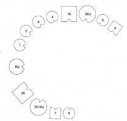
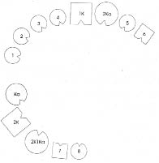
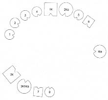

BRIGITTE Bir şey yapmaya karar verdiğim için şimdi ben gelmek isterim.
HELLINGER Buyur.
BRIGITTE Kendi köken ailemi mi dizeyim yoksa kızımınkini mi? Sorunum kızımla da.
HELLINGER Şimdiki aileni diz, bütün erkekler, kadınlar ve çocuklarla.
BRIGITTE İkinci kez evlendim. İlk eşim bizden ayrıldı, daha sonra da öldü.
HELLINGER Neden ayrıldınız? Bir şey mi oldu?
BRIGITTE Psikoloji okudum, eğitimim tamamlandı. Ona ihtiyacım kalmadı.
HELLINGER Burada işbaşında olan denge yasası. Bir evlilikte eşlerden biri bir meslek edindiği, diğeri de onun geçimini sağladığında, geçimi sağlanan artık dengeyi sağlayamayacağı için evlilikten kopar. Evliliğin, dengede oluşan seviye farklarına tahammülü yoktur. Her şey dengelenmelidir. Evlilik sırasında kadın da erkeğin eğitimini karşılamışsa eğitim sona erer ermez erkek kadını terk eder. -Ona hâlâ borçlu olduğun bir şey var.
BRIGITTE Onun zaaflarına ilişkin çok seçici bir hafızam var. Ama yine de ona hâlâ bir şey borçlu olduğumu biliyorum.
HELLINGER Anılar seçicidir.
BRIGITTE Dün ve önceki gün fotoğraf sunağına yerleştirmek üzere onun fotoğraflarını aradım. Çocuklarımsa…
HELLINGER Senin kaçırdıklarını çocukların telafi ediyor.
BRIGITTE Bütün resimleri yürütmüşler. Tek bir resim bile bulamadım. -Kocam yeniden evlendi ve ikinci eşinden iki çocuğu oldu.
HELLINGER Bize onlar da gerek.
BRIGITTE İkinci eşim de iki çocukla geldi. İlk karısı ölmüş.
HELLINGER Brigitte ailesini dizmeye başladığında Hemen düzeni dizeceğim. Burada bu çok kolay.
1. Resim

1K İlk koca, 1-4 ve 5-6’nın babası
Ka Kadın, 1-4’ün annesi (=Brigitte)
1 İlk çocuk, kız
2 İkinci çocuk, kız
3 Üçüncü çocuk, kız
4 Dördüncü çocuk, kız
2Ka Erkeğin ikinci karısı, 5-6’nın annesi
5 Beşinci çocuk, kız
6 Altıncı çocuk, oğlan
2K İkinci koca, 7-8’in babası
1Ka İkinci eşin ilk karısı, ölmüş, 7-8’in annesi
7 Yedinci çocuk, oğlan
8 Sekizinci çocuk, kız
HELLINGER Kızlar nasıl?
İLK ÇOCUK (Sorunlu çocuk) Güçlü bir şekilde çevrelenmiş.
İKİNCİ ÇOCUK Bütün.
ÜÇÜNCÜ ÇOCUK Etkilenmiş.
DÖRDÜNCÜ ÇOCUK Kendimi gayet iyi hissediyorum.
HELLINGER Baba nasıl?
İLK KOCA Kızların resimleri yürüttüğünü duymak bana çok dokundu. Daha önce bir ilintim yoktu.
HELLINGER Çocuklar babaya ait. Annenin burada çocuklar üzerinde hiçbir hakkı yok. Çocuklar babanın ailesine ait. -İkinci karısı nasıl?
İKİNCİ EŞ (KADIN) İyi.
BEŞİNCİ ÇOCUK İyi.
HELLINGER Onların hepsi sizin kardeşleriniz.
ALTINCI ÇOCUK Biraz fazla kadın var.
HELLINGER Senin için öyle. İkinci koca nasıl?
İKİNCİ KOCA Sanıyorum buradaki bu uçurum rastlantısal değil. Ama böyle tamam.
HELLINGER İlk eş (kadın) nasıl?
İLK EŞ İyi.
HELLINGER İkinci kocanın çocukları nasıl?
YEDİNCİ ÇOCUK İlginç bir topluluk.
SEKİZİNCİ ÇOCUK İyi.
HELLINGER Brigitte’nin temsilcisine Kadın nasıl?
KADIN Ben iyi değilim. Boğulur gibi hissediyorum kendimi. Bu kadarı benim için çok fazla. Daha küçük bir halka istiyorum.
İLK ÇOCUK Ben babaya daha yakın olmak istiyorum.
HELLINGER Doğru.
Hellinger resmi değiştirir.
2. Resim

KADIN Böyle daha iyi. Yalnız kızları kaybetmiş olmaktan ötürü kendimi biraz üzgün hissediyorum. Onlara karşı güçlü bir duygu var içimde.
HELLINGER Şansını kaybettin. Kızlar ilk kocana, onun sistemine ait. Onları onun elinden alamazsın. Çocukları ona borçlusun.
BRIGITTE İkinci eşimden ayrılmak üzereyim.
HELLINGER Onun siteminde de yerin yok. Ne ilkinin ne de ikincisinin.
Hellinger çözüm resmini dizer.
3. Resim

HELLINGER Brigitte’nin temsilcisine Burada nasıl?
KADIN Burada da iyi.
HELLINGER Uygun.
KADIN Burada da tamam. Evet, daha iyi. Yeterince alan var.
İKİNCİ ÇOCUK İlk kez anneme karşı canlı bir duygu var içimde.
İLK ÇOCUK Şimdi onunla (anneyle) temas halindeyim.
HELLINGER Burada düşüncesizce gerçekleştirilen bir ayrılığın sonuçlarını görüyorsunuz. Bununla haklar kaybediliyor.
Brigitte’ye Kendi yerine geçmek ister misin?
Dizimde yerini alan Brigitte’ye Eğer istersen kendin için bir şey daha deneyebilirsin.
BRIGITTE Evet, ben aldatılanım.
HELLINGER Hayır, sen yalnızca kararının sonuçlarını taşıyorsun. Yoksa kızların taşıyacak.
BRIGITTE Sonuçları üstlenmek zorundayım. Ağlar.
HELLINGER Doğru. Ama buna rıza göstermedin.
BRIGITTE Evet, olabilir.
HELLINGER Doğru. Ama bu acı iyileştiricidir. Kızları anneyle barıştırır. -İyi mi böyle?
Brigitte başını sallar.
HELLINGER Tamam o zaman, bu kadar.
Gruba Burada gördüğümüz, kişi, Brigitte gibi, kendisi için bir şeyler yaptığında bunun sonuçlarından kaçamayacağıydı. Sonuçlara boyun eğmek zorundadır. Hem erkeğe haksızlık edilecek hem de çocuklar elinden alınacak, bu olmaz. Giden yalnız kalır. Çocuklar haksızlığa uğrayanın yanında kalır. Bu önemli bir ilkedir.
BRIGITTE Benim yüksek öğrenime başlama nedenim bir buçuk yıldır bir ilişkisi olmasıydı.
HELLINGER O da suçlu duruma düşmüş. Olayın bir yüzü de bu, ama diğerini ortadan kaldırmaya yetmez.